25 октября 2026. Четыре тестовых пользователя: обязательный онбординг и профиль, две недели на одном экране, результат да/нет со звёздами или причиной, история без пропущенных недель.
Данные и часы изолированы. Настоящие участники и Telegram не использовались.
Сценарии, проверки и ограничения
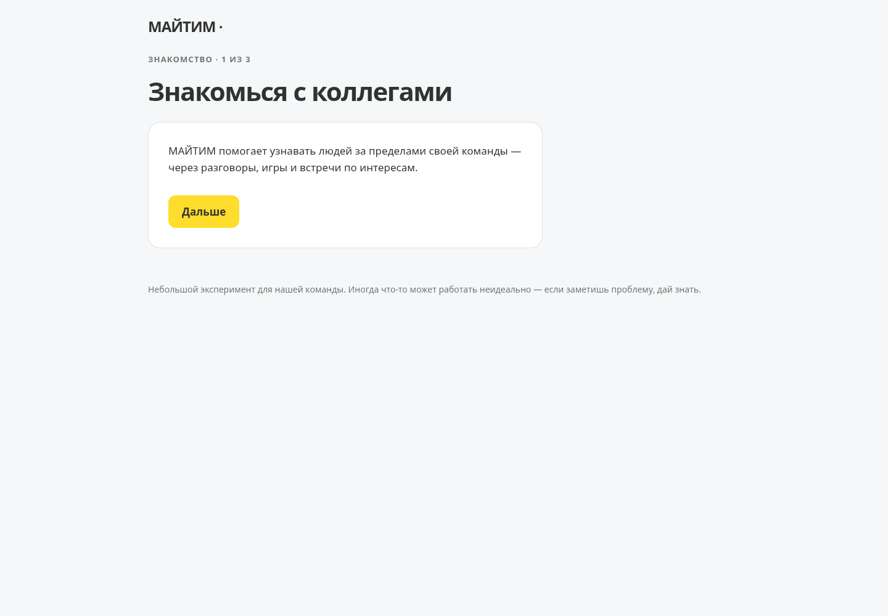
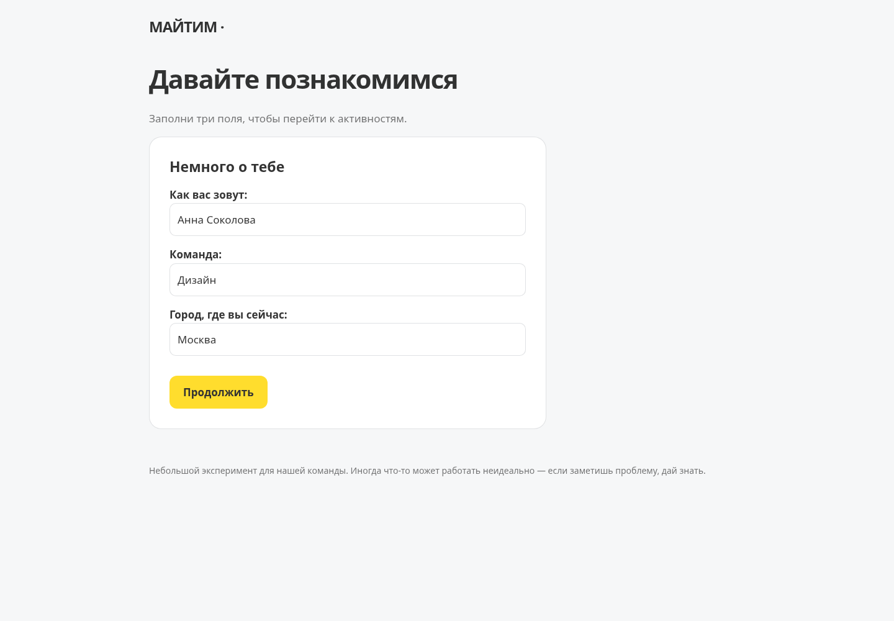
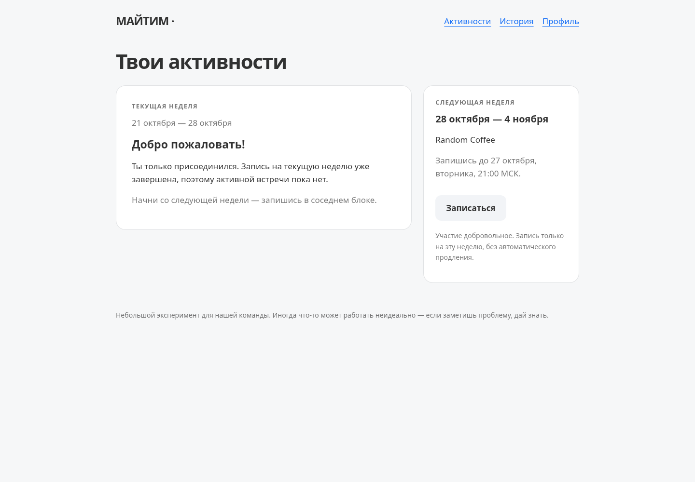
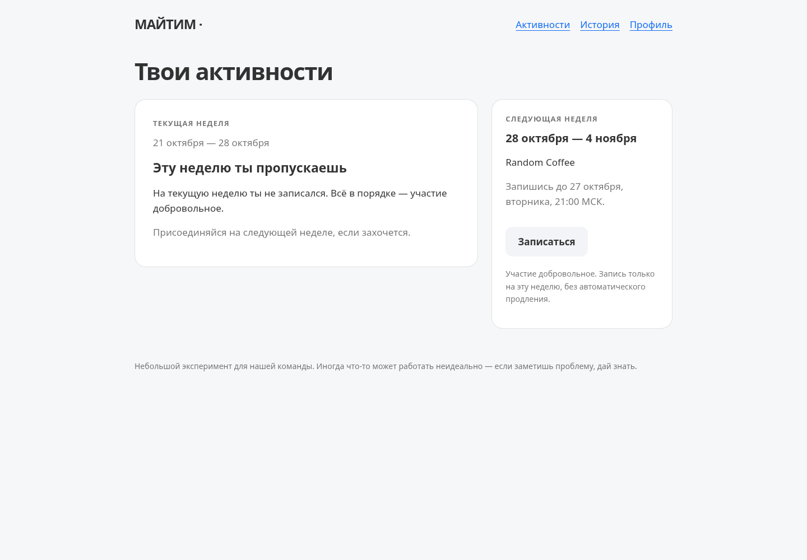
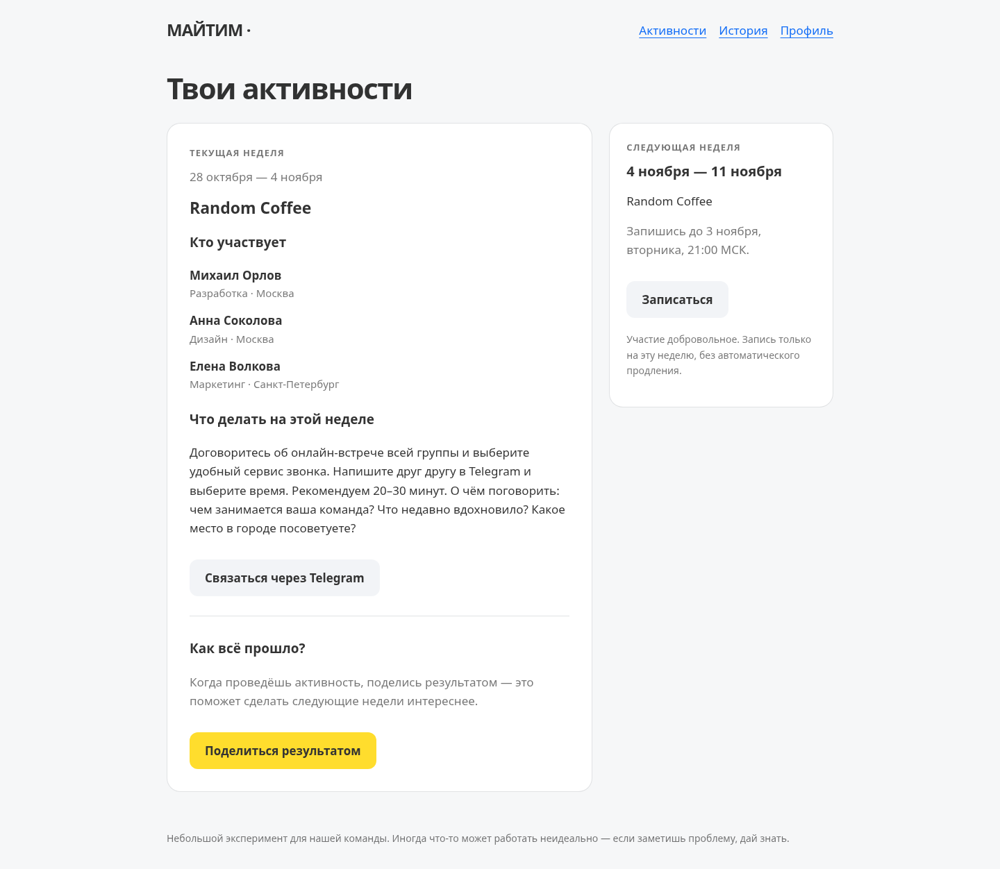
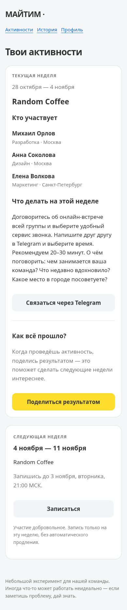
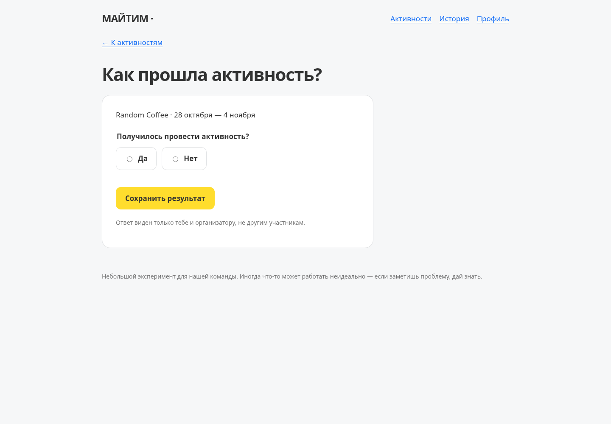
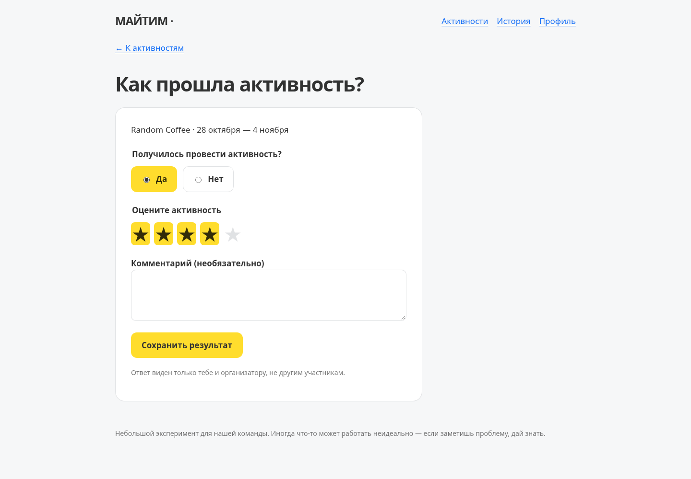
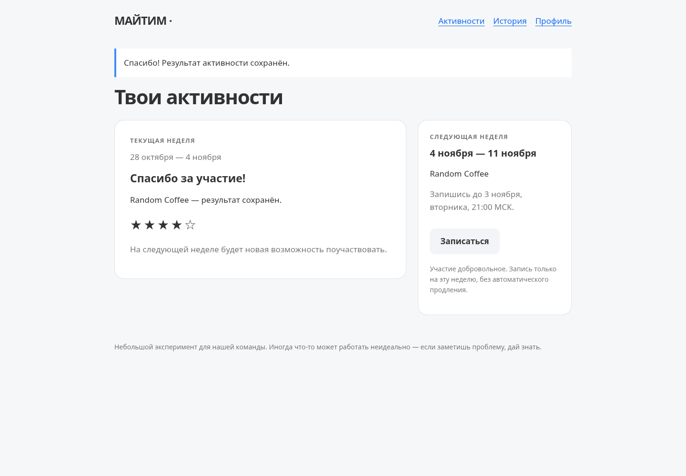
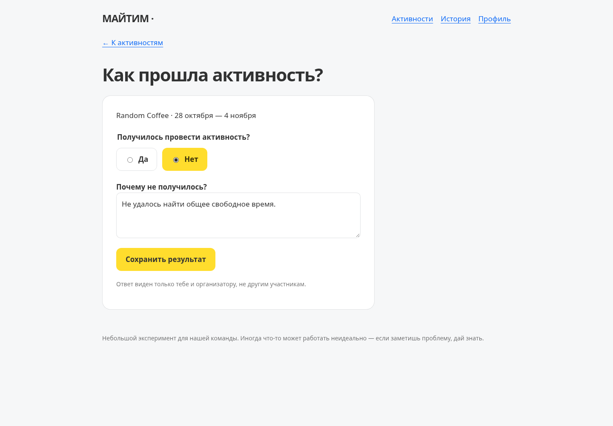
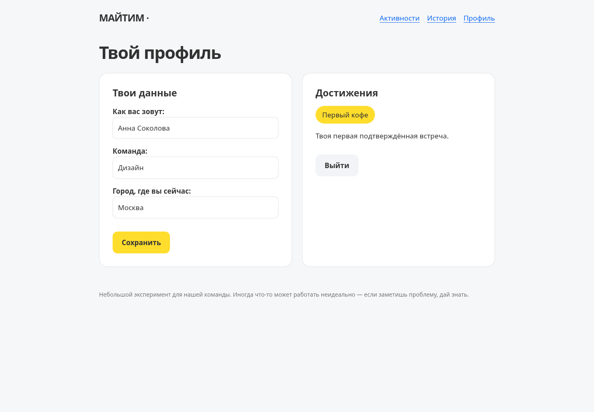
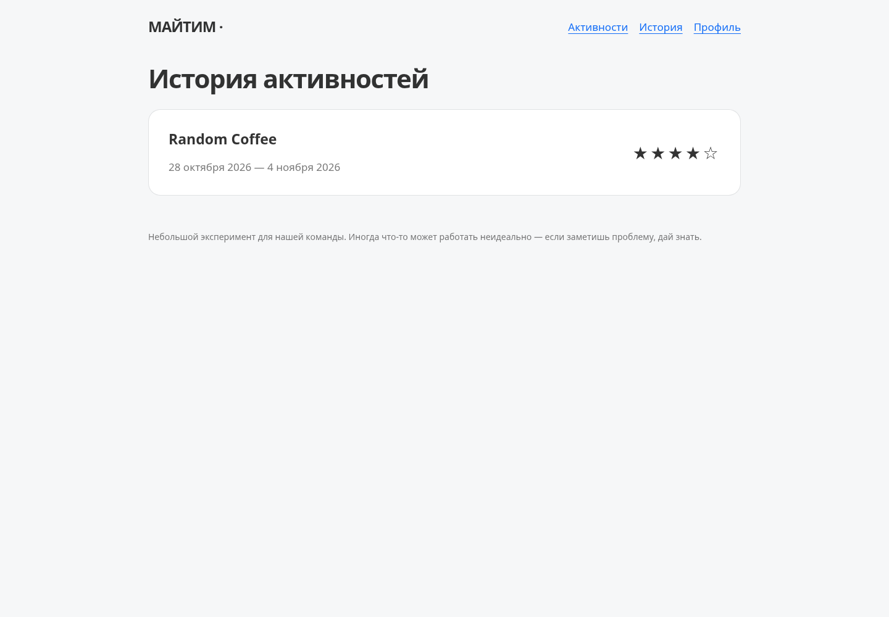
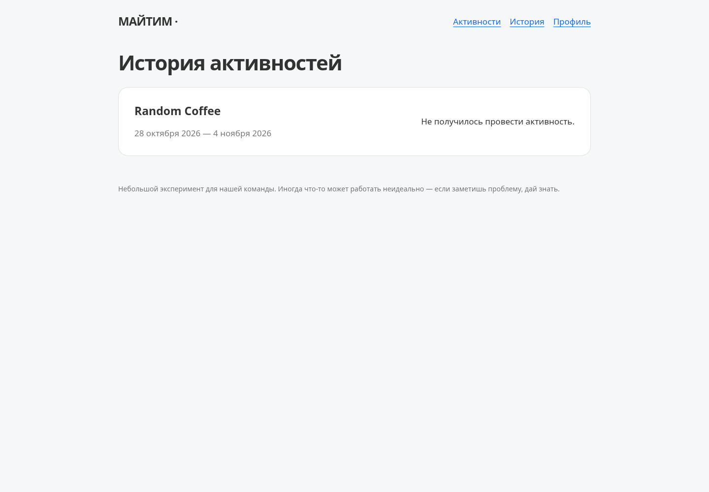
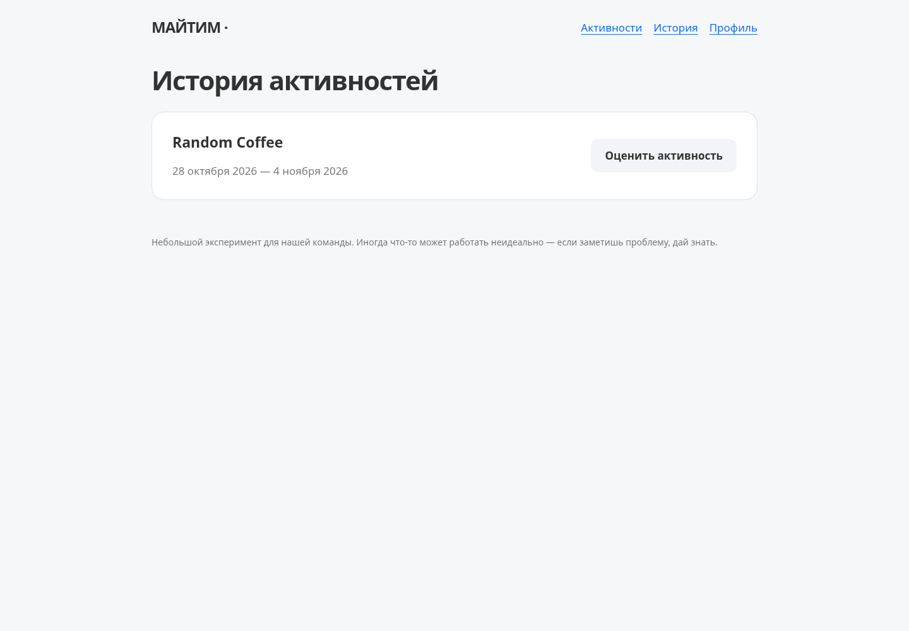
Текущая активность остаётся в основном блоке. Справа — статус «Ты записан на следующую неделю» и возможность отменить запись.
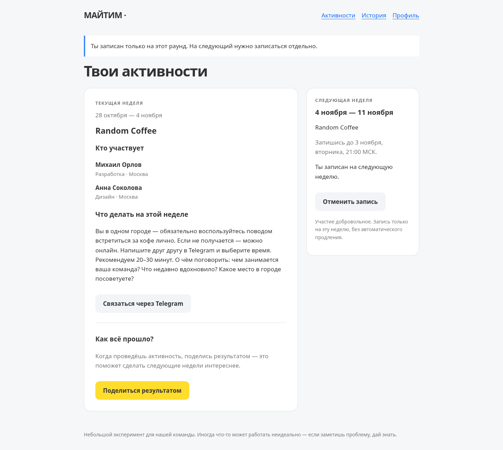